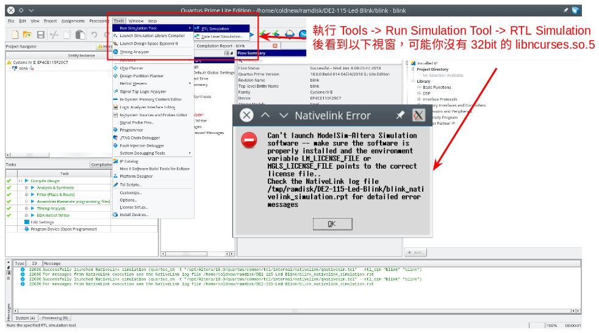
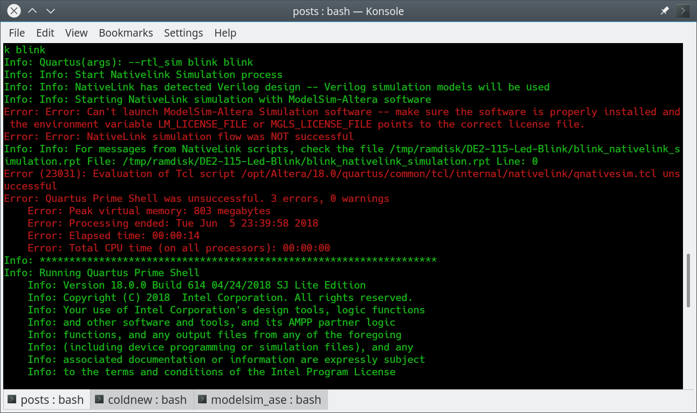
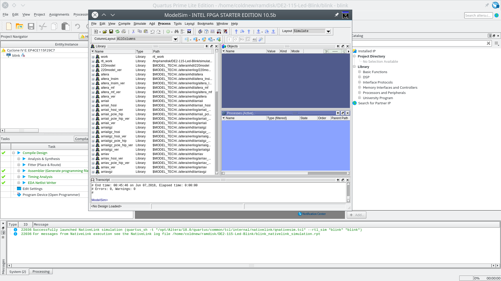

撰寫完 Verilog 程式後，除了下載到 FPGA 開發板上，我們也可以透過 ModelSim 來對我們的程式進行波型的模擬。
由於 Altera 的 ModelSim 在 Linux 下運作可能會遇到一些問題導致不能執行，本篇將整理我自己遇到的情況。
執行 RTL Simulation 出錯
我遇到的第一個錯誤在執行 Tools -> Run Simulation Tool -> RTL Simulation , 它就這樣給我跑出一個不相干的錯誤視窗…

而在 console 下則可以看到這樣的錯誤訊息 (紅字部份):

後來查證一下，我目前使用的 Quartus 為 18.0 ，其中 ModelSim 相關程式我安裝到 /opt/Altera/18.0/modelsim_ase/ 去，由於整個 ModelSim 都是 32bit 的程式，在 64bit Linux 系統上需要安裝 32bit 版本的 ncurses.
Gentoo Linux 使用者可以透過以下命令去安裝:
coldnew@gentoo ~ $ sudo echo "sys-libs/ncurses abi_x86_32" >> /etc/portage/package.use/sys-libs coldnew@gentoo ~ $ sudo emerge -v sys-libs/ncurses:5
安裝完成後會多出 /usr/lib32/libncurses.so.5 這個檔案，這樣執行就不會出錯。
修改 vco 腳本
我安裝的 ModelSim 在 /opt/Altera/18.0/modelsim_ase/ ，而其中有一個 vco 腳本需要做這樣的修改，不然會找不到對應的 vsim 執行檔
將 vco 檔案做以下修正:
--- vco.ori 2018-06-06 23:59:44.560036932 +0800 +++ vco 2018-06-07 00:00:01.430036918 +0800 @@ -207,7 +207,7 @@ 2.[5-9]*) vco="linux" ;; 2.[1-9][0-9]*) vco="linux" ;; 3.[0-9]*) vco="linux" ;; - *) vco="linux_rh60" ;; + *) vco="linux" ;; esac if [ ! -x "$dir/$vco/vsim" ]; then if [ -x "$dir/linuxle/vsim" ]; then
Initialization problem, exiting.
除了上面的問題以外，如果直接執行 /opt/Altera/18.0/modelsim_ase/linux/vsim ，也就是直接呼叫 ModelSim 程式的話，還會遇到像是這樣的錯誤訊息：
Error in startup script:
Initialization problem, exiting.
Initialization problem, exiting.
Initialization problem, exiting.
while executing
"Transcript::action_log "PROPREAD \"$key\" \"$value\"""
(procedure "VsimProperties::Init" line 59)
invoked from within
"VsimProperties::Init $MTIKeypath"
(procedure "PropertiesInit" line 18)
invoked from within
"PropertiesInit"
invoked from within
"ncFyP12 -+"
(file "/mtitcl/vsim/vsim" line 1)
** Fatal: Read failure in vlm process (0,0)
老實說這個問題真的困擾我好一下子，後來在 Making ModelSim ALTERA STARTER EDITION vsim 10.1d work on Ubuntu 14.04 一文看到了原因，ModelSim 需要使用 32bit 並且版本不能太新的 libfreetype, 根據我的測試， 2.5.2 的 libfreetype 是可以用的。
由於我懶的編譯這些缺的函式庫，因此我去 Debian 的套件庫撈了以下兩個函式庫來滿足依賴:
如果你不知道如何解開 .deb 的檔案的話，也可以用我已經包好的 lib32.tar.gz 檔案。
在 /opt/Altera/18.0/ 建立一個名為 lib32 的資料夾，裡面放入剛剛解開的函式庫:
coldnew@gentoo /opt/Altera/18.0/lib32 $ tree . . <b> ├── libfreetype.so.6 -> libfreetype.so.6.11.1 <lw> ├── libfreetype.so.6.11.1 ├── libpng12.so.0 -> libpng12.so.0.50.0 <lw> └── libpng12.so.0.50.0 0 directories, 4 files
接下來我們需要修改 /opt/Altera/18.0/quartus/bin/quartus 這個檔案，這樣執行 Quartus 的時候就可以呼叫出 ModelSim 了
--- quartus.ori 2018-06-07 00:28:01.370035538 +0800 +++ quartus 2018-06-07 00:28:27.100035516 +0800 @@ -19,6 +19,10 @@ # included scripts to support use of path with spaces. IFS= +# hack to make modelsim load lib32's library +dir="$( cd "$( dirname "${BASH_SOURCE[0]}" )" && pwd )" +export LD_LIBRARY_PATH=${dir}/../../lib32 + # Ignore external setting of QUARTUS_ROOTDIR, but allow # user to force a location using QUARTUS_ROOTDIR_VERRIDE if test "${QUARTUS_ROOTDIR_OVERRIDE-UNSET}" != UNSET ; then
執行結果
我目前遇到就上面這些問題，解決以後就可以呼叫 ModelSim 囉 ~
